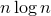

Humans love lists, and the best list is the sorted list (sorted by name, sorted by date, sorted by net worth, etc.). Rarely does our data come to use already sorted, so we'll need to sort it. Usually data has a lot of fields (such as first name, last name, date of birth, ...) so, in practice, we have to decide which fields will be sorted. However, for the purposes of this class, we'll (probably) only be dealing with numerical data, so the we will simply sort the numbers by their values.
In this class, we'll have an array of doubles or ints and wish to sort it. How do we do it? You may not be surprised to learn that, in computer science, sorting is a very big issue and there are many ways to do it. Since a sort is a sort, they should all give the same result; the techniques only differ in how fast they do it. As you might expect, the most efficient sorting techniques are somewhat complicated, so we will focus on the boring, inefficient, easy-to-understand techniques.
You can see animations of many kinds of sorts here: http://www.sorting-algorithms.com/
(Visualize this sort: http://www.sorting-algorithms.com/selection-sort)
From your textbook,
The selection sort algorithm begins by finding the position of the minimum value and exchanging the minimum with the value in the first position in the array. Then, the algorithm finds the minimum value beginning with the second element, and exchanges this minimum with the second element. This process continues until reaching the next-to-last element, which is compared to the last element; the values are exchanged if they are out of order. At this point, the entire array of values is in ascending order.
Here is the code.
void selectionSort(int arr[], int size) { int minpos; int temp; for(int i = 0; i <= (size-2); i++) { // find position of mininum value beginning at index i minpos = i; // assume it is at i; this may change for(int j = (i+1); j <= (size-1); j++) { // is the value at minpos actually not the min? if(arr[minpos] > arr[j]) { // update minpos minpos = j; } } // now that the inner-loop is over, minpos is the // index of the smallest value, so swap index i with // the minpos temp = arr[minpos]; arr[minpos] = arr[i]; arr[i] = temp; } }
How efficient is this sort? On average, with an array of
random values (completely unsorted), this sort will
require about "comparisons" (in that if() statement)
and about swaps. That's actually not very efficient at
all; the good sorts require only  comparisons; oh
well.
Bubble sort is actually used in practice if there is an expectation that the values are already nearly-sorted. It starts at the beginning of the array, and tries to move the first element to its correct position by swapping that element with the next every time the next element is smaller. The effect is that each element from the beginning appears to "bubble up" to its final position.
The way its programmed below, we use the bool swapped variable to keep
track if any swapping took place. If nobody swapped, then it's already
sorted, so we can stop, even if we did not consider each element
separately. This is why it is used in practice; if the array is
already nearly-sorted, then bubble sort finishes much sooner than
other sorts. Other sorts are not able to (efficiently) detect if their
work is done.
(Visualize this sort: http://www.sorting-algorithms.com/bubble-sort)
void bubbleSort(int arr[], int size) { int tmp; bool swapped; for(int i = 0; i < size; i++) { swapped = false; for(int j = (size - 1); j > i; j--) { if(arr[j-1] > arr[j]) { swapped = true; tmp = arr[j-1]; arr[j-1] = arr[j]; arr[j] = tmp; } } if(!swapped) { break; } } }